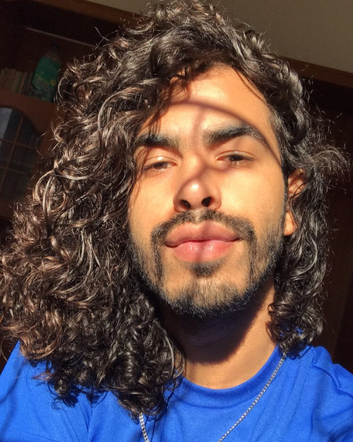

Marcos Telles
Dev Front End Jr.
Contato
- +5534 9999999999
- marcosfftelles@aaaaa.com
- www.marcostelles.com
- marcosfftelles
Skills
- HTML5, CSS, Git & Github
Python
Marcos Telles
Dev Front End Jr.
Contato
Skills
Python
Olá sou o Marcos. Tenho 28 anos e moro em Uberlândia MG.
Estou estudando desenvolvimento Front End.
Estou terminando meus estudos em HTML e CSS e desenvolvendo projetos para portifólio
Pretendo estudar mais linguagens de Front End, como Java Script e React.js.
Também gosto muito de Python e já participei de alguns intensivões de automoção e do programa Minas Programando do SENAC.